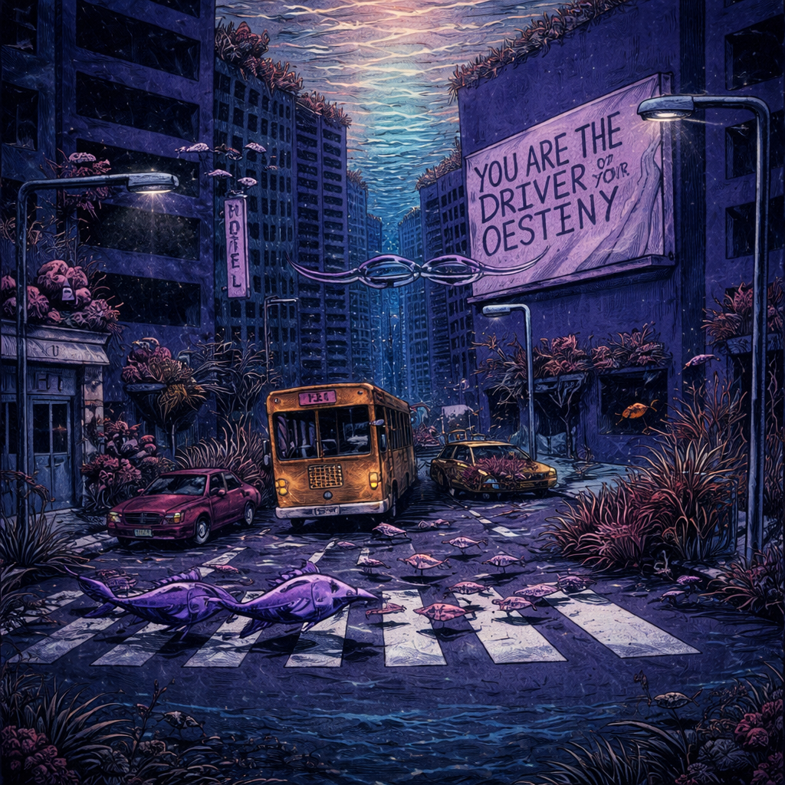

Don't Drink
& Drive.
A narrative album in three acts. Every track is a chapter. Start with Chapter 1, follow the story through to Chapter III, finish with proof that it was possible. This is what happens when engineering meets music — precision, structure, intention.
Don't Drink & Drive
Select a track
Hugh Corduroy
Click any track in the list below to play. All 21 tracks included. Production by Hugh Corduroy.